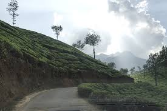

Located near the southern tip of mainland India, Thiruvananthapuram, [5] (formerly and often still known as Trivandrum)
is the capital city of Kerala in Southern India. The city is shares the same name with its district,
Kollam
Mentioned in Greek literature from the first century, Kollam has been a thriving trading port for centuries.
Best Known for Ashtamudi Lake.
Pathanamthitta
Pathanamthitta [2] is a country-side town in Kerala in Southern India. The town also serves
as district headquarters for district that shares the same name. Pathanamthitta is famous for
its large rubber plantations, lumber mills and wood industries.
Alappuzha
Alleppey has a wonderful past. Though the present town owes its existence to the sagacious
Diwan Raja Kesavadas in the second half of 18th century, district of Alappuzha figures in
classical Literature.
Kottayam
Kottayam is a town in south-central Kerala, sandwiched between the Vembanad Lake and the Kerala
hill-country. Best known as a hub of trade and commerce, Kottayam is
Idukki
Idukki is an alluring retreat for tourists in God’s Own Country. Clad in dense green
forest and crowned with verdant mountains, it boasts of Anamudi, the highest peak in
India. Besides, it also takes pride in being the abode of the second largest arch dam in
the world.
Ernakkulam
Ernakulam is a district of Kerala, India. Situated in the central part of the state, spanning an area
of about 3,000 square kilometres (1,200 sq mi), Ernakulam district is home to over 9% of Kerala’s population.
Trissur
Surrounded by mighty hills, forests and waterfalls in the East, beaches and backwaters in the west and a
vibrant culture and heritage, the cultural capital of Kerala is located almost in the central part of God’s
Own Country.
Palakkad
Palakkad, otherwise known by its anglicized name Palghat, is a district in Kerala that lies
along the serpentine mountain ranges of the Western Ghats.

Malappuram
Malappuram literally means a land atop hills and the region is enriched by three great rivers
flowing through it – the Chaliyar, Kadalundi and the Bharathapuzha. Malappuram has made numerous
contributions to the cultural heritage of Kerala.
Kozhikode
Kozhikode was the capital of Malabar during the time of Zamorins, who where ruling
before the British Rule in India.
Wayanad
Wayanad is the green paradise - the border world of the greener part of Kerala.Situated
not far from Calicut or the city of Zamorins, Wayanad is a world apart from Keralas agricultural
dustrial epicentres.
Kannur
Kannur, also known as Cannanore, is a beautiful city on the northern side of Kerala State in India.
This place is famous for Communist politics and temple festivals. Kannur is the administrative
headquarters of the district of Kannur.
Kasarkode
Kasaragod ([kɑːsɾɡoːɖ] (About this soundlisten) and anglicised to Kassergode[2]) is
a municipal town and the district headquarters of Kasaragod district of Kerala state in India.